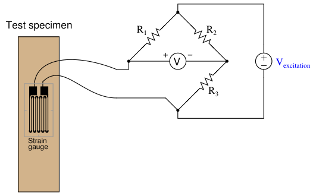
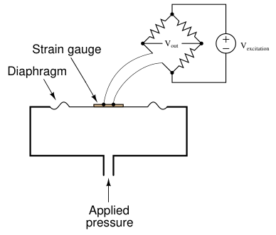
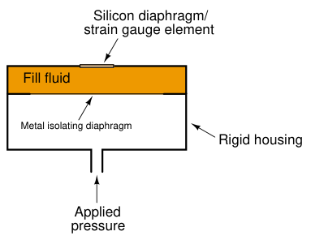
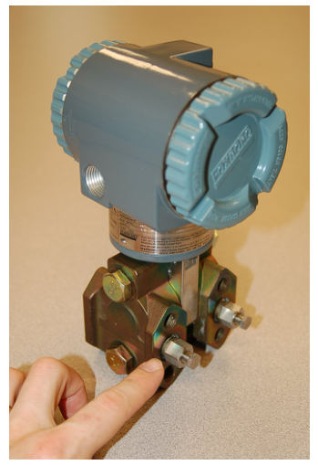

The original, as published: Tony R. Kuphaldt, Lessons In Industrial Instrumentation, Piezoresistive (strain gauge) pressure sensors. CC BY 4.0, https://creativecommons.org/licenses/by/4.0/. Imported as published, from https://www.ibiblio.org/kuphaldt/socratic/sinst/book/liii.pdf https://www.ibiblio.org/kuphaldt/socratic/sinst/book/liii.pdf
Piezoresistive means “pressure-sensitive resistance,” or a resistance that changes value with applied pressure. The strain gauge is a classic example of a piezoresistive element, a typical strain gauge element shown here on the tip of my finger:
In order to be practical, a strain gauge must be glued (bonded) on to a larger specimen capable of withstanding an applied force (stress):

As the test specimen is stretched or compressed by the application of force, the conductors of the strain gauge are similarly deformed. Electrical resistance of any conductor is proportional to the ratio of length over cross-sectional area (R ∝ A), which means that tensile deformation (stretching)
will increase electrical resistance by simultaneously increasing length and decreasing cross-sectional area while compressive deformation (squishing) will decrease electrical resistance by simultaneously decreasing length and increasing cross-sectional area. Attaching a strain gauge to a diaphragm results in a device that changes resistance with applied pressure. Pressure forces the diaphragm to deform, which in turn causes the strain gauge to change resistance. By measuring this change in resistance, we can infer the amount of pressure applied to the diaphragm. The classic strain gauge system represented in the previous illustration is made of metal (both the test specimen and the strain gauge itself). Within its elastic limits, many metals exhibit good spring characteristics. Metals, however, are subject to fatigue over repeated cycles of strain (tension and compression), and they will begin to “flow” if strained beyond their elastic limit. This is a common source of error in metallic piezoresistive pressure instruments: if overpressured, they tend to lose accuracy due to damage of the spring and strain gauge elements.3 Modern manufacturing techniques have made possible the construction of strain gauges made of silicon instead of metal. Silicon exhibits very linear spring characteristics over its narrow range of motion, and a high resistance to fatigue. When a silicon strain gauge is over-stressed, it fails completely rather than “flows” as is the case with metal strain gauges. This is generally considered a better result, as it clearly indicates the need for sensor replacement (whereas a metallic strain sensor may give the false impression of continued function following an over-stress event).
3For a simple demonstration of metal fatigue and metal “flow,” simply take a metal paper clip and repeatedly bend it back and forth until you feel the metal wire weaken. Gentle force applied to the paper clip will cause it to deform in such a way that it returns to its original shape when the force is removed. Greater force, however, will exceed the paper clip’s elastic limit, causing permanent deformation and also altering the spring characteristics of the clip.
Thus, most modern piezoresistive-based pressure instruments use silicon strain gauge elements to sense deformation of a diaphragm due to applied fluid pressure. A simplified illustration of a diaphragm / strain gauge pressure sensor is shown here:

As the diaphragm bows outward with applied fluid pressure, the strain gauge stretches to a greater length, causing its resistance to increase. This change in resistance imbalances the bridge circuit, causing a voltage (Vout) proportional to the amount of applied pressure. Thus, the strain gauge works to convert an applied pressure into a measurable voltage signal which may be amplified and converted into a 4-20 mA loop current signal (or into a digital “fieldbus” signal).
In some designs, a single silicon wafer serves as both the diaphragm and the strain gauge so as to fully exploit the excellent mechanical properties of silicon (high linearity and low fatigue). However, silicon is not chemically compatible with many process fluids, and so pressure must be transferred to the silicon diaphragm/sensor via a non-reactive fill fluid (commonly a silicone-based or fluorocarbon-based liquid). A metal isolating diaphragm transfers process fluid pressure to the fill fluid, which in turn transfers pressure to the silicon wafer. Another simplified illustration shows how this works:

The isolating diaphragm is designed to be much more flexible (less rigid) than the silicon diaphragm, because its purpose is to seamlessly transfer fluid pressure from the process fluid to the fill fluid, not to act as a spring element. In this way, the silicon sensor experiences the same pressure that it would if it were directly exposed to the process fluid, without having to contact the process fluid. The flexibility of the metal isolating diaphragm also means it experiences much less stress than the silicon sensing diaphragm, which avoiding the problems of metal fatigue experienced by transmitter designs using metal as the sensing (spring) element. This use of a fill fluid to transfer pressure from an isolating diaphragm to a sensing diaphragm inside the transmitter is used in most if not all modern pressure transmitter designs, even those that are not piezoresistive.
An example of a pressure instrument utilizing a silicon strain gauge element is the Foxboro model IDP10 differential pressure transmitter, shown in the following photograph:
